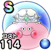

クイーンスライム
ほこらバーハ戦闘時のハッスルダンスHP回復効果+20%こころ最大コスト+4スキルHP回復効果+7%魅了耐性+5%呪い耐性+5% / 8.5点
くわしい特徴
【ランク特殊効果】 バーハ戦闘時のハッスルダンスHP回復効果+20%こころ最大コスト+4スキルHP回復効果+7%魅了耐性+5%呪い耐性+5%

ほこらバーハ戦闘時のハッスルダンスHP回復効果+20%こころ最大コスト+4スキルHP回復効果+7%魅了耐性+5%呪い耐性+5% / 8.5点
【ランク特殊効果】 バーハ戦闘時のハッスルダンスHP回復効果+20%こころ最大コスト+4スキルHP回復効果+7%魅了耐性+5%呪い耐性+5%